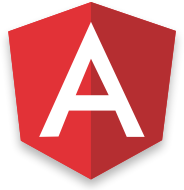
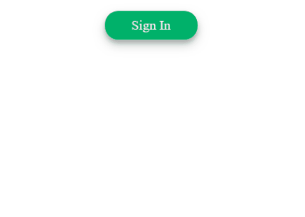
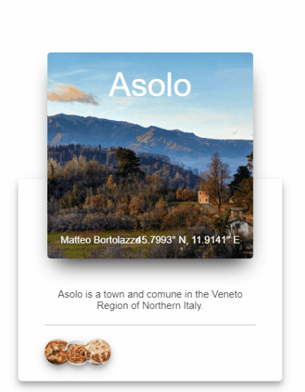

Les Web Components
Atelier Waigéo N°1
25 Mai 2018
Sommaire
- Présentation des Web Components
- Introduction à Stencil
- Stencil API
- Demo
- Ressources
Prélude
Building UI at Enterprise Scale with Web Components by EA Sports
Web Components
- Composants JavaScript normalisés pris en charge de manière native
- S'exécute dans n'importe quel framework ou par son propre chef
- Répond au problème des composants partagés
- Propulsé par la spécification Custom Elements v1
4 technologies
représentent
les Web Components
- Custom Elements
- Shadow DOM
- HTML Templates
- HTML Imports
Custom Elements
Crée des éléments personnalisés qui encapsulent vos fonctionnalités sur une page HTML
vs
Se contenter de spaghettis à la sauce balises HTML définissant vos fonctionnalités
Shadow DOM
permet d'encapsuler du JavaScript et du CSS au sein d'un Web Component afin que ces éléments soient séparés du DOM du document principal
HTML Templates
met à disposition les éléments <template> et <slot> pour créer un modèle flexible de fragments de contenu, côté client, qui peut ensuite être utilisée pour remplir le shadow DOM d'un composant Web
Au chargement de la page, le contenu de chaque balise <template> n'est pas affiché mais peut être instancié par la suite via JavaScript
HTML Imports
est conçue à l'origine pour être le mécanisme d'empaquetage des composants Web
Mais est également utilisée pour importer un fichier HTML seul en utilisant une balise <link>
<link rel="import" href="myfile.html" />
Navigateurs compatibles
- Support natif : Chrome, Safari, Opéra
- Scripts polyfills performant
- Firefox très proche (version 60/61)
Exemple de Custom Element
<my-component size="large" theme="light"/></my-component>
Exemple de Custom Element
class MyComponent extends HTMLElement {
createdCallback() {
// Standard DOM/fetch/etc. code...
}
attachedCallback() {}
detachedCallback() {}
attributeChangedCallback() {}
}
document.registerElement('my-component', MyComponent);
Pouvons-nous rendre plus facile la construction d'éléments personnalisés ?
- Souhait de continuer à utiliser des fonctionnalités que seul les frameworks proposent
- Désir de gérer facilement des bundles de composants
- Volonté d'utiliser un language typé comme TypeScript
Un simple compilateur pour créer
des Web Components rapide et réactif
stenciljs.com
Stencil ? Késako
- Un compilateur qui génère des Custom Elements, une partie de la spécification des composants Web
- Ce n'est pas un framework : la sortie est 100% conforme aux normes Custom Elements
- Ajoute de puissantes fonctionnalités venant du monde des frameworks aux Web Components
- Créé et utilisé par l'équipe derrière Ionic Framework. Ionic 4+ et ionicons sont construits dessus !
Pourquoi Stencil ?
- Performance : les frameworks traditionnels s'avèrent trop lourds pour désservir une expérience mobile exigeante via des applications Web progressives (PWA)
- Stabilité : désir d'utiliser les standards Web et éviter les réécritures constantes lors d'un changement de framework
Pourquoi Stencil ?
- Interopérabilité : capacité à créer des composants qui fonctionnent à l'identique à travers tous les principaux frameworks
- Familiarité : fonctionnalités prisées par les frameworks JS mais dans un package plus léger et conforme aux normes
Exemple d'un composant
import { Component, Prop } from '@stencil/core';
@Component({
tag: 'my-name',
styleUrl: 'my-name.scss'
})
export class MyName {
@Prop() name: string;
render() {
return (
<p>
Hello, my name is {this.name}
</p>
);
}
}
<my-name name="Ch'Big" /></my-name>
Les composants compilés par Stencil ont
- Virtual DOM : mises à jour DOM rapides sans les pièges communs de performance DOM
- Lazy Loading : par défaut, les composants sont chargés de manière asynchrone et peuvent être associés à d'autres composants
- Réactivité : mises à jour efficaces basées sur les changements de propriété et d'état
Les composants compilés par Stencil ont
- Rendu haute performance : système de rendu asynchrone similaire à React Fiber
- JSX : système de markup populaire et familier lancé par React
- Server Side Rendering : hydratez les composants précompilés sur le serveur sans l'utilisation d'un navigateur sans tête (headless browser)
Les fonctionnalités
des frameworks inclus
|  |
|
|
|
|---|---|---|---|
| JSX / Virtual DOM | ⨯ | ✓ | ✓ |
| Async Rendering | ⨯ | ✓ | ✓ |
| TypeScript | ✓ | ⨯ | ✓ |
| Decorators | ✓ | ⨯ | ✓ |
| Server side rendering | ✓ | ✓ | ✓ |
Stencil API - Cycle de vie
- componentWillLoad() : le composant est sur le point de charger et il n'a pas encore été rendu
- componentDidLoad() : le composant a été chargé et a déjà été rendu
- componentWillUpdate() : le composant est sur le point d'être mis à jour et rendu.
- componentDidUpdate() : le composant vient d'effectuer son rendu
- componentDidUnload() : le composant a déchargé et l'élément sera détruit
Stencil API - Décorateurs
- @Component() : définir le nom du tag et la feuille de style associée (Sass ou plain CSS)
import { Component } from '@stencil/core'; @Component({ tag: 'todo-list', styleUrl: 'todo-list.scss', host: { theme: 'todo', role: 'list' } }) export class TodoList { ... }
Stencil API - Décorateurs
- @Prop() : créer une propriété sur le composant
- @State() : créer un état local et le surveiller pour mettre à jour le rendu si détection d'un changement
import { Prop, State } from '@stencil/core';
...
export class MyName {
@Prop({ mutable: true }) name: string = 'oùestcharly';
@State() completedTodos: Todo[];
...
Stencil API - Décorateurs
- @Method() : exposer une méthode à l'api public
On peut appeler cette méthode comme cela :import { Method } from '@stencil/core'; export class TodoList { @Method() showPrompt() { // show a prompt } }const todoListElt = document.querySelector('todo-list'); todoListElt.showPrompt();
Stencil API - Décorateurs
- @Watch() : lorsqu'un utilisateur met à jour une propriété, ce décorateur lancera la méthode à laquelle elle est attachée et transmettra la nouvelle et l'ancienne valeur
import { Prop, Watch } from '@stencil/core'; export class LoadingIndicator { @Prop() activated: boolean; @Watch('activated') watchHandler(newValue: boolean, oldValue: boolean) { console.log('New value is: ', newValue); } }
Stencil API - Décorateurs
- @Element() : récupèrer l'élément DOM pour ce composant
import { Element } from '@stencil/core'; export class TodoList { @Element() todoListEl: HTMLElement; addClass(){ this.todoListEl.classList.add('active'); } }
Stencil API - Evenements
- @Event() : déclencher des événements sur un composant
import { Event, EventEmitter } from '@stencil/core'; ... export class TodoList { @Event() todoCompleted: EventEmitter; todoCompletedHandler(todo: Todo) { this.todoCompleted.emit(todo); } }
Stencil API - Evenements
- @Listen() : écouter les événements envoyés par ses enfants
import { Listen } from '@stencil/core'; ... export class TodoApp { @Listen('todoCompleted') todoCompletedHandler(event: CustomEvent) { console.log('Received todoCompleted event: ', event.detail); } }
Stencil vs X
- Angular/React/Vue/... : Stencil construit des composants Web standard qui s'exécutent nativement dans le navigateur.
- Polymer : Stencil fonctionne à la compilation plutôt qu'à l'exécution. Pragmatique sur JSX, Virtual DOM et d'autres fonctionnalités des frameworks.
- Vanilla Web Components : Stencil fournit des fonctionnalités complexes venant des frameworks, comme si vous les aviez écrites vous-même.
Demo
SVGPaths Morphing
Morphing UI
|  |  |